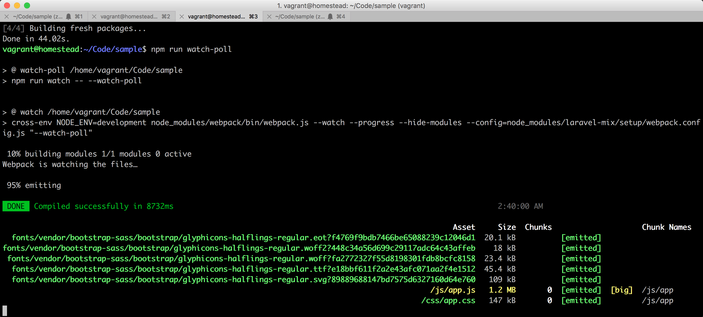
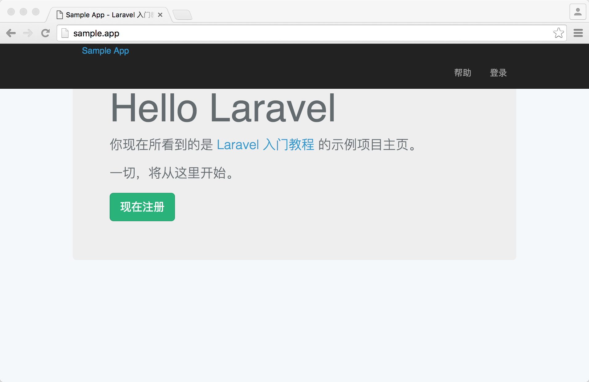
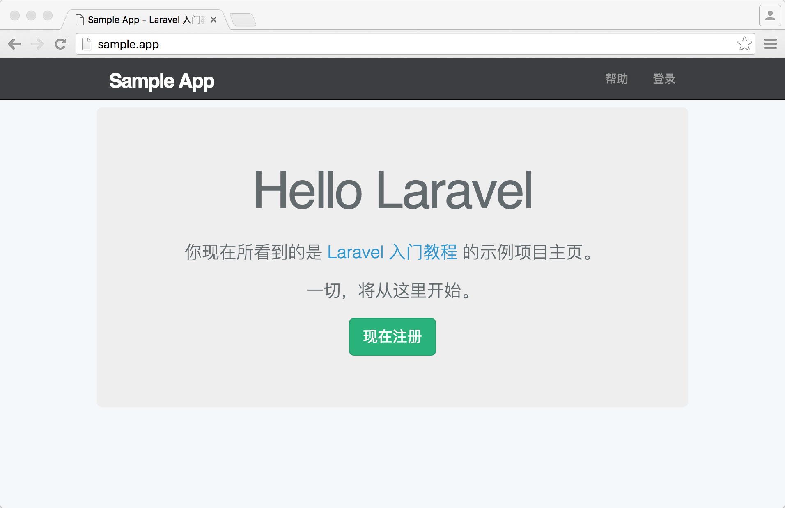

4.2. 样式美化
样式美化
现在，让我们来新建一个分支，接下来针对样式的调整修改都将在此分支上进行：
$ git checkout master
$ git checkout -b filling-layout-styleBootstrap
在本书的教学过程中将使用 Bootstrap 来作为演示应用的前端框架。Bootstrap 是由 Twitter 的两位工程师 Mark Otto 和 Jacob Thornton 在 2011 年开源的一个 Web 前端框架。该框架兼容当下主流浏览器，并支持响应式设计，对新手友好，容易上手，且内置了非常多的样式组件可供使用。如果你对 Bootstrap 的使用不太熟悉，推荐你阅读下 Bootstrap 的 官方文档。
网站导航
我们在很多网站上都能看到顶部导航的存在，因为这是个非常通用的产品需求，顶部导航能够让用户很方便的对网站进行浏览。接下来我们会使用 Bootstrap 来为网站添加顶部导航，加入一些基本的如 LOGO，帮助页，登录页等链接，方便用户跳转，随着后面功能的添加，该导航也会被不断完善。
Laravel 项目默认集成了 Bootstrap 前端框架，但还是需要你做一定配置之后才能够正常使用，在接下来的配置过程中，你将学到一些前端开发工作流相关的知识。
Bootstrap 是以 NPM 扩展包的形式集成到 Laravel 项目中的，NPM 是 Node.js（一个基于 Google V8 引擎的 JavaScript 运行环境）的包管理和分发工具。Composer 的一些概念也是从 NPM 中借鉴过来的，因此 NPM 也有个类似 composer.json 文件的 package.json 文件，Laravel 默认会为每个新建的项目自动生成该文件，并会在文件里面默认集成一些较为常用的扩展包。我们可以在编辑器中查看此文件：
package.json
{
"private": true,
"scripts": {
"dev": "npm run development",
"development": "cross-env NODE_ENV=development node_modules/webpack/bin/webpack.js --progress --hide-modules --config=node_modules/laravel-mix/setup/webpack.config.js",
"watch": "cross-env NODE_ENV=development node_modules/webpack/bin/webpack.js --watch --progress --hide-modules --config=node_modules/laravel-mix/setup/webpack.config.js",
"watch-poll": "npm run watch -- --watch-poll",
"hot": "cross-env NODE_ENV=development node_modules/webpack-dev-server/bin/webpack-dev-server.js --inline --hot --config=node_modules/laravel-mix/setup/webpack.config.js",
"prod": "npm run production",
"production": "cross-env NODE_ENV=production node_modules/webpack/bin/webpack.js --progress --hide-modules --config=node_modules/laravel-mix/setup/webpack.config.js"
},
"devDependencies": {
"axios": "^0.16.2",
"bootstrap-sass": "^3.3.7",
"cross-env": "^5.0.1",
"jquery": "^3.1.1",
"laravel-mix": "^1.0",
"lodash": "^4.17.4",
"vue": "^2.1.10"
}
}Laravel 默认集成了一些 NPM 扩展包，我们重点看以下几个：
- bootstrap-sass —— Bootstrap NPM 扩展包；
- jquery —— jQuery NPM 扩展包；
- laravel-mix —— 由 Laravel 官方提供的静态资源管理工具；
- vue —— VUE.js 前端框架；
这些扩展包，为 Laravel 提供了一套完整的前端工作流。
我们可以使用 NPM 对这些扩展包进行安装，但由于 NPM 的安装速度，安全性和稳定性等都饱受开发者的诟病，因此我们在教程中改用 Facebook 在 2016 年的 10 月份开源的 Yarn 来作为 NPM 的替代品，在后面的章节中我将为大家详细讲解 NPM 和 Yarn 之间的关系。现在先让我们使用 Yarn 对扩展包进行安装，请在项目根目录下运行以下命令进行安装：
$ yarn install --no-bin-links
$ yarn add cross-env在本教程提供的定制化 Homestead 安装包中，我们已默认为大家集成了 Yarn，因此不必再进行重复安装 Yarn，若你想了解具体的安装方式，可查阅 Yarn 官方安装文档。
安装完成之后，让我们对 Laravel 默认生成的 app.scss 文件进行编辑，删除此文件里的所有内容，只留下面一行，导入 Bootstrap：
resources/assets/sass/app.scss
// Bootstrap
@import "node_modules/bootstrap-sass/assets/stylesheets/bootstrap";细心的你可能会发现上面新建的样式文件后缀名（.scss）有别我们之前经常看到的样式文件后缀名（.css），这是因为 .scss 是 Sass（一种 CSS 开发工具）专属的文件格式，我们后面会再对 Sass 相关的知识进行补充讲解。
将 Bootstrap 导入成功之后，我们需要使用以下命令来将 .scss 文件编译为 .css 才能正常使用，编译命令如下：
$ npm run dev我们也可以通过下面的命令，在每次检测到 .scss 文件发生更改时，自动将其编译为 .css 文件：
$ npm run watch-poll请保证在进行项目开发时
npm run watch-poll一直运行着，避免出现前端文件更改后没有应用到页面上的歧义。
执行成功可以看到以下：

所有编译后的资源文件都被存放在 public 文件夹中，你能在 public/css 文件夹中看到刚刚编译成功之后的文件。
接下来让我们更改基础视图的页面结构，为应用添加顶部导航，并加入帮助页和登录页的链接。
resources/views/layouts/default.blade.php
<!DOCTYPE html>
<html>
<head>
<title>@yield('title', 'Sample App') - Laravel 入门教程</title>
<link rel="stylesheet" href="/css/app.css">
</head>
<body>
<header class="navbar navbar-fixed-top navbar-inverse">
<div class="container">
<div class="col-md-offset-1 col-md-10">
<a href="/" id="logo">Sample App</a>
<nav>
<ul class="nav navbar-nav navbar-right">
<li><a href="/help">帮助</a></li>
<li><a href="#">登录</a></li>
</ul>
</nav>
</div>
</div>
</header>
<div class="container">
@yield('content')
</div>
</body>
</html>Laravel 在运行时，是以 public 文件夹为根目录的，因此我们可以使用下面这行代码来为 Laravel 引入样式：
<link rel="stylesheet" href="/css/app.css">上面代码将引入 public/css/app.css 样式文件。
header, nav 是 HTML5 提供的一种语义化标签，其实际作用与 div 一致，语义化的标签能帮助机器更方便理解代码，使代码更简洁，有助于网站的 SEO 优化。我们在上面代码使用到一些如 navbar, container 等类名在 Bootstrap 中都拥有特殊含义。
现在让我们接着更改首页信息，加多一些页面元素。
resources/views/static_pages/home.blade.php
@extends('layouts.default')
@section('content')
<div class="jumbotron">
<h1>Hello Laravel</h1>
<p class="lead">
你现在所看到的是 <a href="https://laravel-china.org/courses/laravel-essential-training-5.1">Laravel 入门教程</a> 的示例项目主页。
</p>
<p>
一切，将从这里开始。
</p>
<p>
<a class="btn btn-lg btn-success" href="#" role="button">现在注册</a>
</p>
</div>
@stop现在刷新页面会看到整个页面样式有点混乱，让我们来优化调整下吧。

resources/assets/sass/app.scss
// Bootstrap
@import "node_modules/bootstrap-sass/assets/stylesheets/bootstrap";
$navbar-color: #3c3e42;
/* universal */
body {
padding-top: 60px;
}
section {
overflow: auto;
}
textarea {
resize: vertical;
}
.jumbotron {
text-align: center;
}
/* typography */
h1, h2, h3, h4, h5, h6 {
line-height: 1;
}
h1 {
font-size: 3em;
letter-spacing: -2px;
margin-bottom: 30px;
text-align: center;
}
h2 {
font-size: 1.2em;
letter-spacing: -1px;
margin-bottom: 30px;
text-align: center;
font-weight: normal;
color: #777;
}
p {
font-size: 1.1em;
line-height: 1.7em;
}
/* header */
.navbar-inverse {
background-color: $navbar-color;
}
#logo {
float: left;
margin-right: 10px;
font-size: 1.7em;
color: #fff;
text-decoration: none;
letter-spacing: -1px;
padding-top: 9px;
font-weight: bold;
&:hover {
color: #fff;
}
}因为我们在上面运行着 npm run watch-poll 命令，watch-poll 任务会监控着 resources 下的文件变更。当你保存 app.scss 的动作被 watch-poll 命令捕捉到以后，就会触发自动编译功能，将 .scss 文件编译为 .css 文件，并存放到 public/css 文件夹里。
这时候我们刷新页面：
